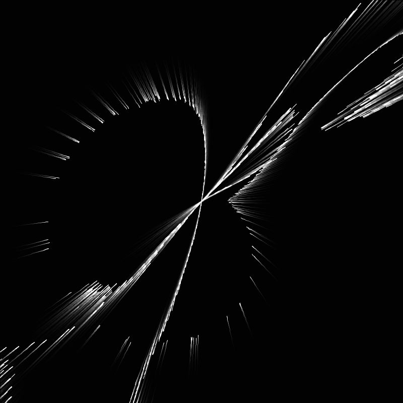
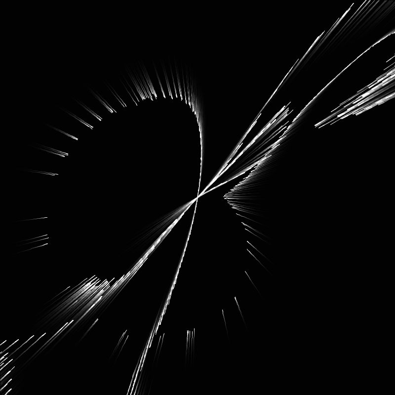

花と鋼 / Drawing with particles
2018.6 / Media Art

 



物質も人間の思考も、細かい複数の最小要素から構成されている。
Drawing with particles は集合と解散を繰り返す300の粒子をマウスで操作し、思いのままの形状を描く新たな表現ツールである。 これを用いて作成したコンピュータグラフィックスの静止画作品群が「花と鋼」である。
自身の表現のねらいとDrawing with particlesの持つ偶然性をうまく融合させ、鉱石のような質感を持つ花を咲かせた。
Drawing with particles は集合と解散を繰り返す300の粒子をマウスで操作し、思いのままの形状を描く新たな表現ツールである。 これを用いて作成したコンピュータグラフィックスの静止画作品群が「花と鋼」である。
自身の表現のねらいとDrawing with particlesの持つ偶然性をうまく融合させ、鉱石のような質感を持つ花を咲かせた。
Development
Processing